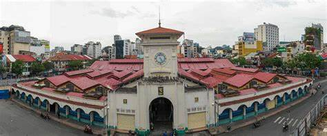

<!DOCTYPE html>
<html lang="en">
<head>
	<meta charset="UTF-8">
	<meta name="viewport" content="width=device-width, user-scalable=no, minimum-scale=1.0, maximum-scale=1.0">
	<script src="https://aframe.io/releases/0.9.2/aframe.min.js"></script>
	<script src="https://cdn.rawgit.com/jeromeetienne/AR.js/master/aframe/build/aframe-ar.min.js"></script>
	<script>
		window.onload = function () {
			setTimeout(function () {
				var resizeEvent = window.document.createEvent('UIEvents');
				resizeEvent.initUIEvent('resize', true, false, window, 0);
				window.dispatchEvent(resizeEvent);
			}, 3000);
		};
	</script>
</head>

<body style='margin : 0px; overflow: hidden;'>
	<a-scene embedded arjs="sourceType: webcam; debugUIEnabled: false;">
		<a-assets>
			
		</a-assets>

		<a-marker preset="custom" type="pattern" url="./marker/bt2.patt" id="marker">
			<a-image id="img1" src="#image1" width="16" height="9" position="0 0 0" rotation="-90 0 0" scale="0.1 0.2 1" visible="false"></a-image>
			<a-text value="Chợ Bến Thành" position="0 1 0" scale="1 1 1" color="#FF5733" rotation="-90 0 0"></a-text>
		</a-marker>
		<a-entity camera></a-entity>
	</a-scene>
</body>

</html>


<!-- <!DOCTYPE html>
<html lang="en">
<head>
    <meta charset="UTF-8">
    <meta name="viewport" content="width=device-width, user-scalable=no, minimum-scale=1.0, maximum-scale=1.0">
    <script src="https://aframe.io/releases/0.9.2/aframe.min.js"></script>
    <script src="https://cdn.rawgit.com/jeromeetienne/AR.js/master/aframe/build/aframe-ar.min.js"></script>
    <script>
        window.onload = function () {
            setTimeout(function () {
                var resizeEvent = window.document.createEvent('UIEvents');
                resizeEvent.initUIEvent('resize', true, false, window, 0);
                window.dispatchEvent(resizeEvent);
            }, 3000);
        };
    </script>
</head>

<body style='margin: 0px; overflow: hidden;'>
    <a-scene embedded arjs="sourceType: webcam; debugUIEnabled: false;">
        <a-assets>
            
            
            
        </a-assets>

        <a-marker preset="custom" type="pattern" url="./marker/bt2.patt" id="marker">
            <a-image id="img1" src="#image1" width="16" height="9" position="0 0 0" rotation="-90 0 0" scale="0.1 0.2 1" visible="false"></a-image>
            <a-image id="img2" src="#image2" width="16" height="9" position="2 0 0" rotation="-90 0 0" scale="0.1 0.2 1" visible="false"></a-image>
            <a-image id="img3" src="#image3" width="16" height="9" position="4 0 0" rotation="-90 0 0" scale="0.1 0.2 1" visible="false"></a-image>
        </a-marker>
        <a-entity camera></a-entity>
    </a-scene>  

    <script>
        window.onload = function () {
            const images = [
                document.querySelector("#img1"),
                document.querySelector("#img2"),
                document.querySelector("#img3")
            ];

            let delay = 3000; // Thời gian chờ là 3 giây
            let currentIndex = 0;

            const showImage = () => {
                images.forEach((image, index) => {
                    image.setAttribute("visible", index === currentIndex); // Chỉ hiển thị hình ảnh hiện tại
                    image.setAttribute("scale", "0.1 0.2 1");

                    // Debug thông tin hình ảnh
                    console.log(`Image ${index + 1} (${image.getAttribute("src")}) is visible: ${image.getAttribute("visible")}`);
                });

                // Tăng chỉ số hình ảnh
                currentIndex = (currentIndex + 1) % images.length; // Quay lại từ đầu nếu đạt tới hình ảnh cuối
            };

            setInterval(showImage, delay); // Lặp lại việc hiển thị hình ảnh sau khoảng thời gian 3 giây
        };
    </script>
</body>
</html> -->